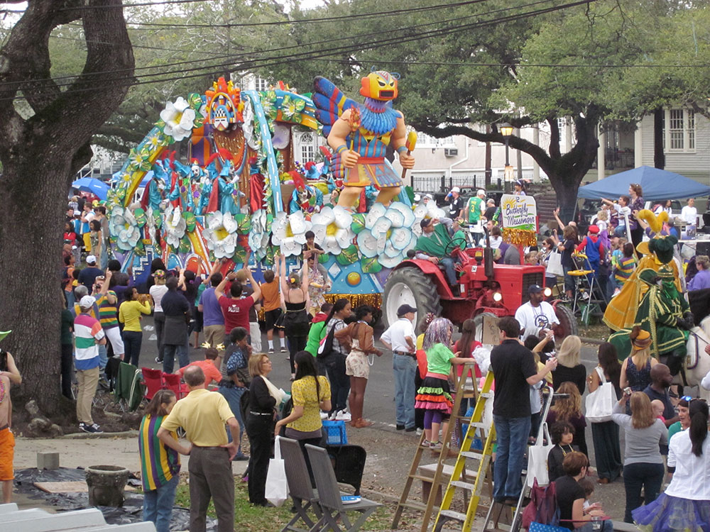
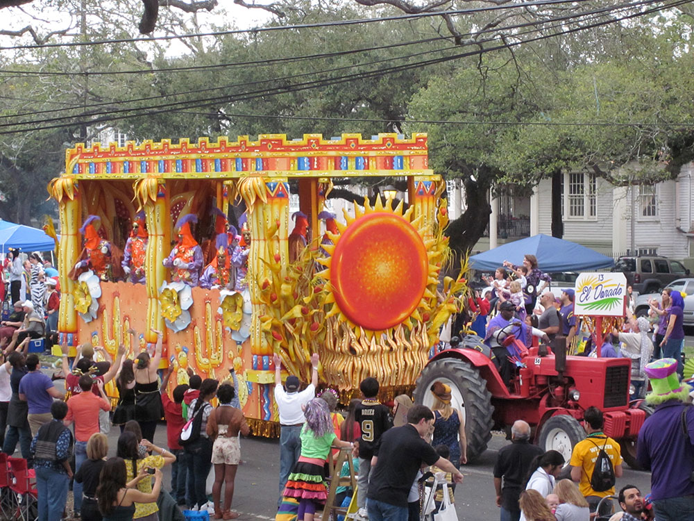
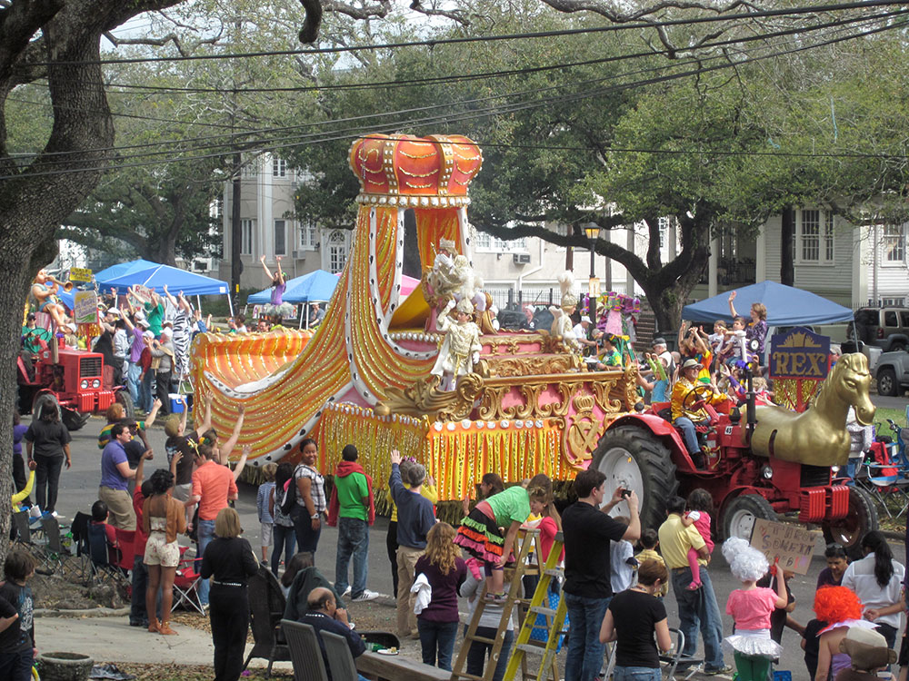
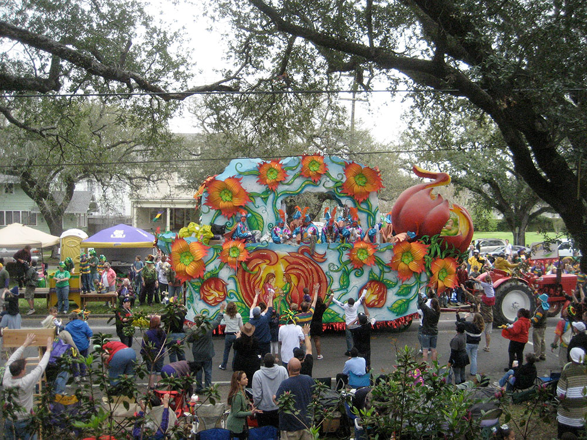

Historic Mardi Gras procession led by the King of Carnival, featuring elaborately themed floats, centuries-old traditions, and many of the symbols most closely associated with New Orleans Carnival.
Parade Route
General Route: The parade begins at Napoleon Avenue and South Claiborne Avenue, travels down Napoleon Avenue to St. Charles Avenue, follows St. Charles through Uptown New Orleans and around Harmony Circle, continues along St. Charles to Canal Street, then proceeds down Canal Street toward the Mississippi River before ending near South Peters Street and Tchoupitoulas Street in the downtown area.
Overview
The Krewe of Rex, officially known as the School of Design, is the most iconic and influential organization in New Orleans Mardi Gras. Founded in 1872, Rex was created to promote the city as a visitor destination and to stage a grand celebration honoring a visiting Russian grand duke. Over time, the krewe became known as the King of Carnival, establishing many of the traditions that define Mardi Gras today. The official Carnival colors of purple, green, and gold, along with the now-famous doubloon coins, originated with Rex and continue to be central symbols of the season.
The parade itself is a showcase of artistry, pageantry, and New Orleans culture. Hand-painted floats, costumed riders, marching bands, and intricate annual themes create a memorable spectacle that draws enormous crowds on Mardi Gras morning. Each year, a prominent civic leader is chosen to reign as Rex, and the ceremonial transfer of the city's key to the monarch symbolizes the city's festive spirit. As one of the oldest continuously participating Mardi Gras organizations, the Krewe of Rex remains the defining expression of Carnival tradition and one of the most celebrated events in Louisiana.
This article uses material from the Wikipedia articles and official Mardi Gras and krewe pages for the https://www.rexorganization.com/ which are released under the Creative Commons Attribution-Share-Alike License 3.0.



